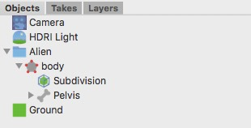

オブジェクトブラウザオブジェクトブラウザは、3D シーン内に存在するオブジェクトを階層表示します。  Cheetah3D で新規にドキュメントを開くと、デフォルトで一つのカメラが存在しているでしょう。このカメラはあなたが現在の 3D ビュー内の何を見ているかを示しています。シーンにオブジェクトを追加すると、それらがオブジェクトブラウザ上の各行に一つずつ現れてくるのが見えるでしょう。さらに、各オブジェクトはそれぞれ一つ以上のタグを持っています。 Cheetah3D で作業していくと、しばしばオブジェクトの "内側" に別のもの (物理的にでは無く、あくまで概念的に...) を入れなければならない場面に遭遇します。たとえばあなたがオブジェクトをフォルダで分類する時がそれです。しかしクリエータオブジェクトのなどの場合は、その効果を出すには目的のオブジェクトの内部にそれが入っている必要があります。中に入れるのはとても簡単。子にするオブジェクトをクリックして選択し、親にするオブジェクトにドラッグして重ねるだけです。同様に、オブジェクトのオーダーはクリック & ドラッグによって変更する事が可能です。 オブジェクトブラウザは異なった二色でオブジェクトの選択状態を表示します (以下の画像を見てください)。暗い青色で表示されているのがプライマリ選択状態のオブジェクトです。この状態では、あらゆるツールがこのオブジェクトのみに適用されます。 ではグループオブジェクトにしてみましょう。すべてのオブジェクトを選択してください。次に、オブジェクトブラウザ上でコンテキストメニュを出し、そこから "グループ" コマンドを選んでください。すぐさま新しいフォルダオブジェクトが先ほど選択したオブジェクトを内包した状態で作成されるでしょう。
|